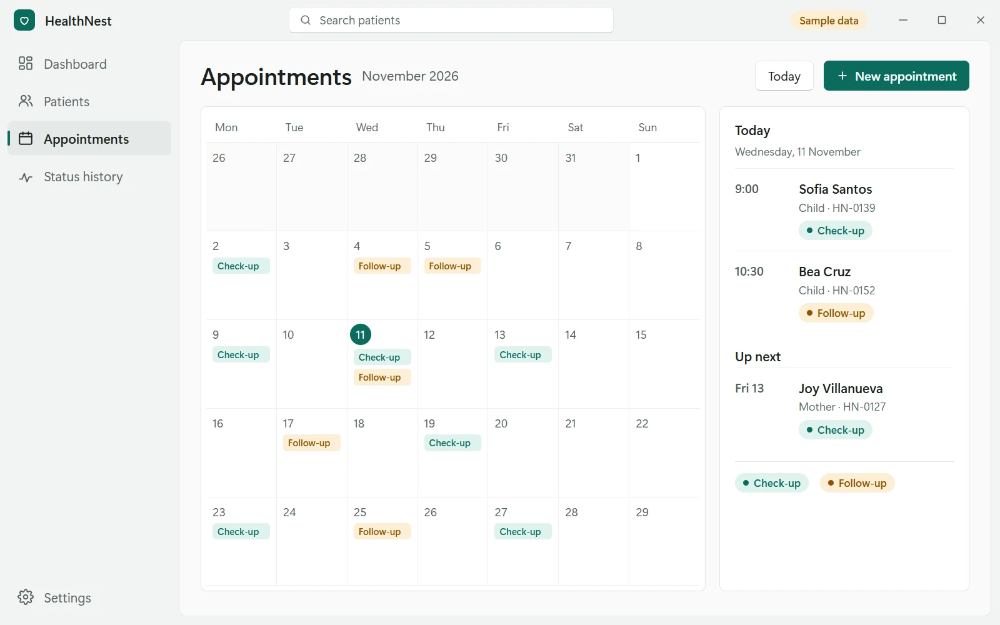
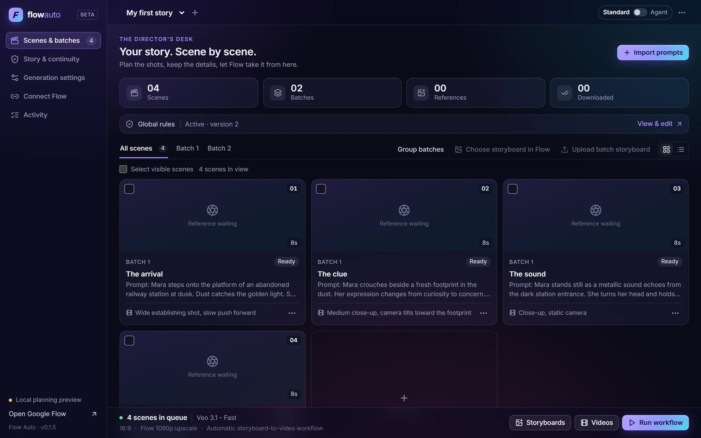

Available for internships & freelance
I build software that feels alive.
Computer Engineering student in Cebu, Philippines. I build desktop apps and automation tools that take the repetitive work out of a job.
Selected work
A production line for AI video.
A Chrome and Edge extension that turns a scene-by-scene script into finished, numbered 1080p videos on Google Flow.
Paste a script. Every scene, batch and global rule is checked before you accept it.
Storyboards and character sheets come from Flow, ChatGPT, Grok or Meta AI, saved as real PNGs.
Each scene goes to Flow or Grok Imagine with its rules and references attached.
The queue survives a refresh or a crash, and it pauses to ask instead of guessing.
Its own MCP server gives Claude and Gemini 18 tools to read the queue, edit a scene and start a run.
One clear workflow for maternal and child health.
A Windows desktop app that keeps patient cases, appointments and status changes in one place.
A profile and case notes for each mother and child, with the current status always in view.
A calendar for check-ups and follow-ups, so nothing slips between visits.
Every status change is recorded, so a health worker can see how each case is progressing.
The screens are an illustration of the app, with sample data.
A short film about who I am and what I build.
Seventy-three seconds, narrated and animated in Remotion: who I am, what I build, and how I can help your team or business.
Rest the mouse on the screen to watch it with sound.
Tools I use to turn ideas into systems.
C# and .NET for desktop apps, TypeScript and React for the web, SQLite for data, and MCP so AI assistants can drive the tools I build.
- LanguagesC# · C · JavaScript · TypeScript · HTML · CSS
- Desktop & UIWinUI 3 · WinForms · .NET · XAML · React

- DataSQLite · MySQL · MS Access · SQL · Data modeling

- FoundationsData structures · Algorithms · Numerical methods · Linear algebra
Engineering mindset, human-centered output. I like projects where software has a clear job: organize messy information, reduce repetitive work, and make a process easier for the person using it.
Start from the job
HealthNest keeps patient profiles, case status and the appointment calendar in one workflow, so nothing has to be pieced together from separate notes.
Make it safe to leave running
Flow Auto saves what it is about to do before it does it. After a crash it picks up where it was, and when a result is unclear it stops and asks.
Let other tools drive it
Flow Auto ships its own MCP server with 18 tools, so Claude and Gemini can run it, and it asks before anything that spends credits.
- Degree
- B.S. Computer Engineering
- Current lane
- Desktop apps & automation
- Based in
- Cebu, Philippines
Have something worth building?
I'm open to internships, freelance work and collaborations. Tell me what you're building.
Write to me directly
Or find me here